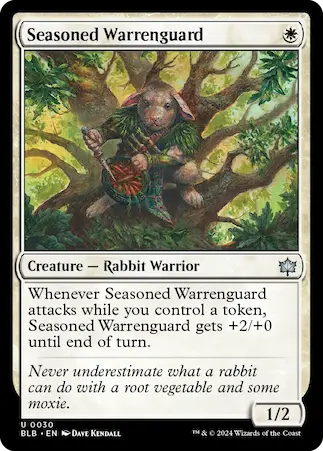
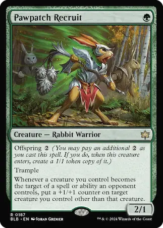
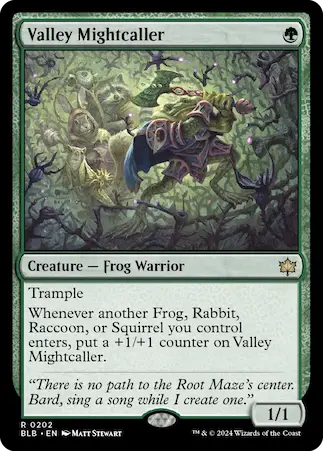
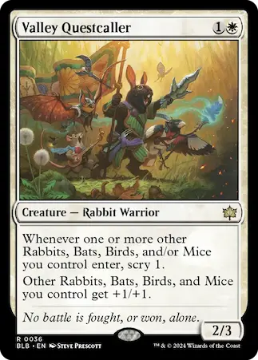
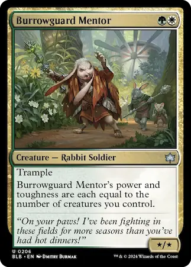
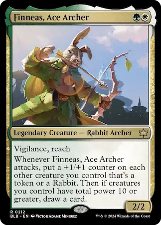
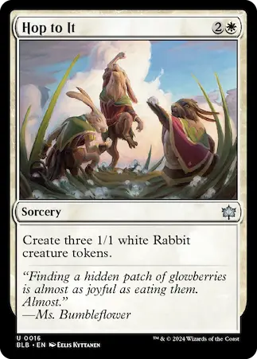
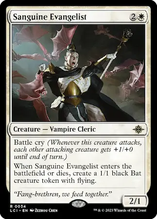
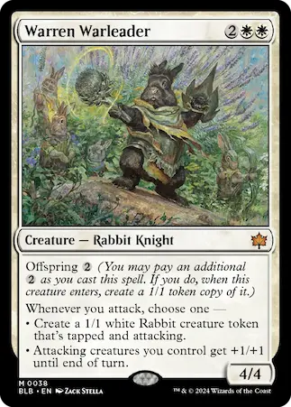
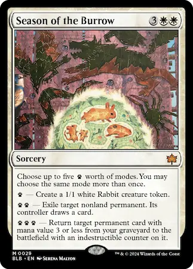

Seasoned Warrenguard x4
Pawpatch Recruit x4
Valley Mightcaller x4
Valley Questcaller x4
Burrowguard Mentor x4
Finneas, Ace Archer x2
Hop to It x4
Sanguine Evangelist x4
Warren Warleader x4
Season of the Burrow x2









